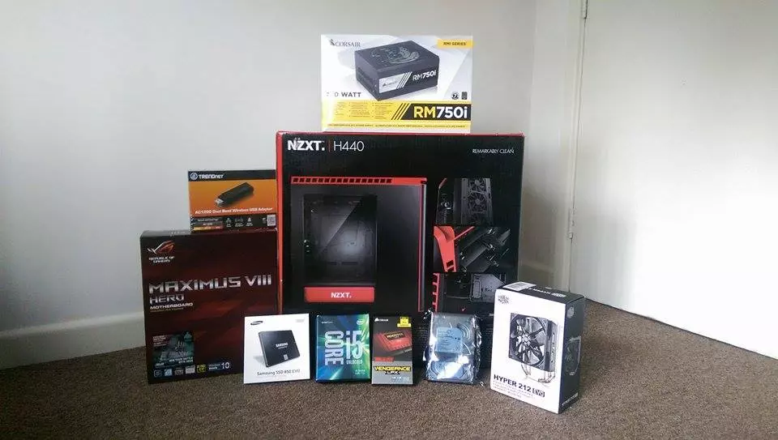
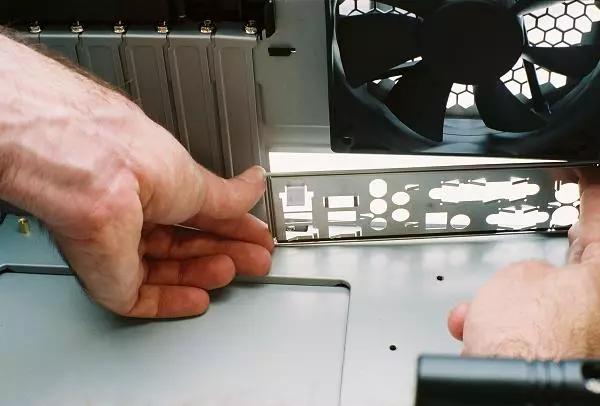
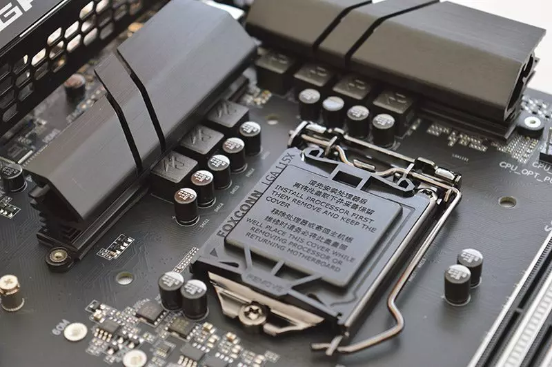
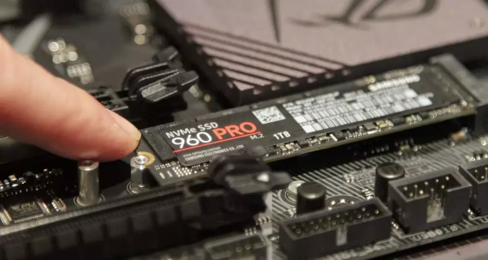
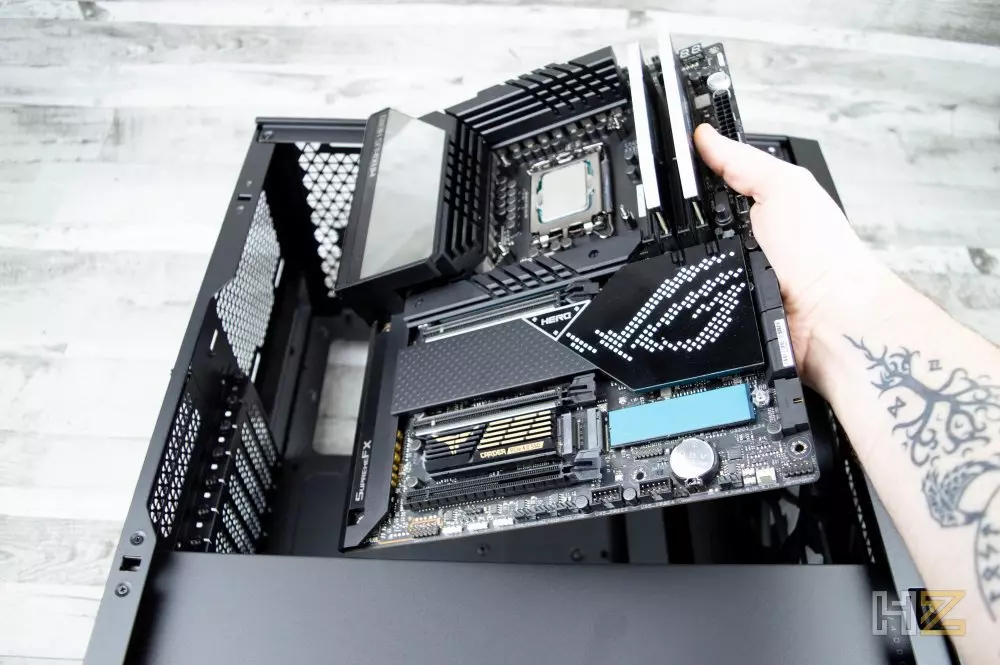
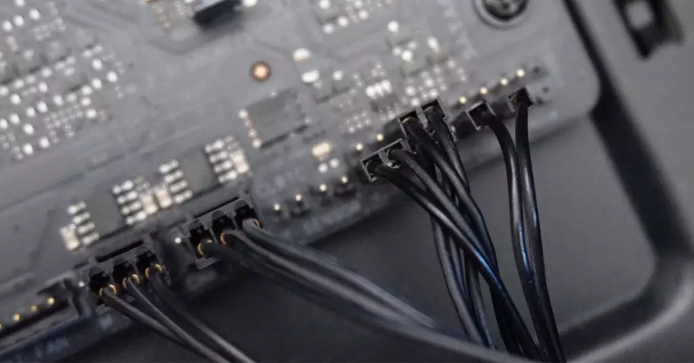
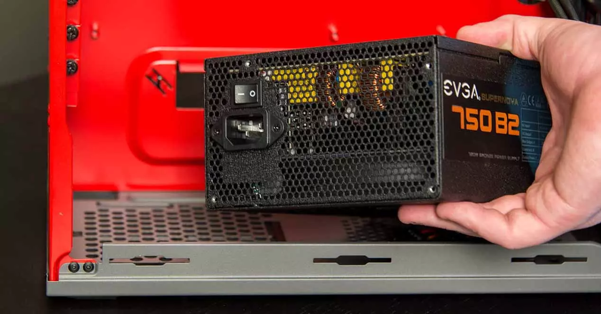
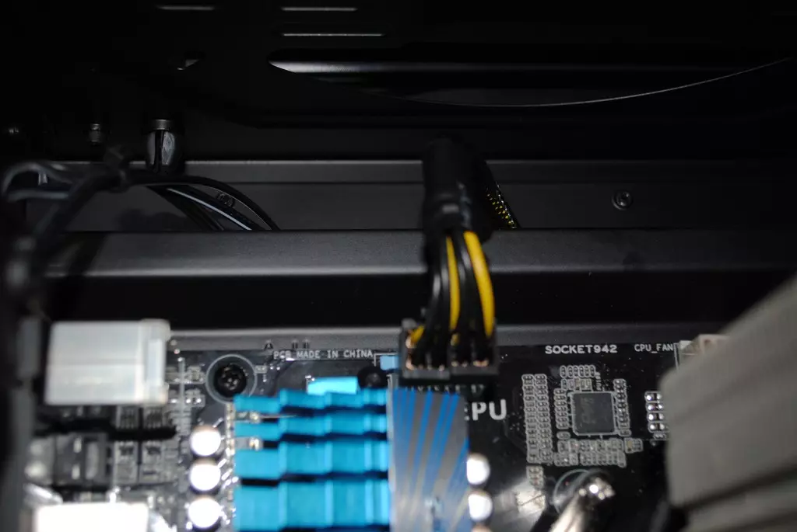
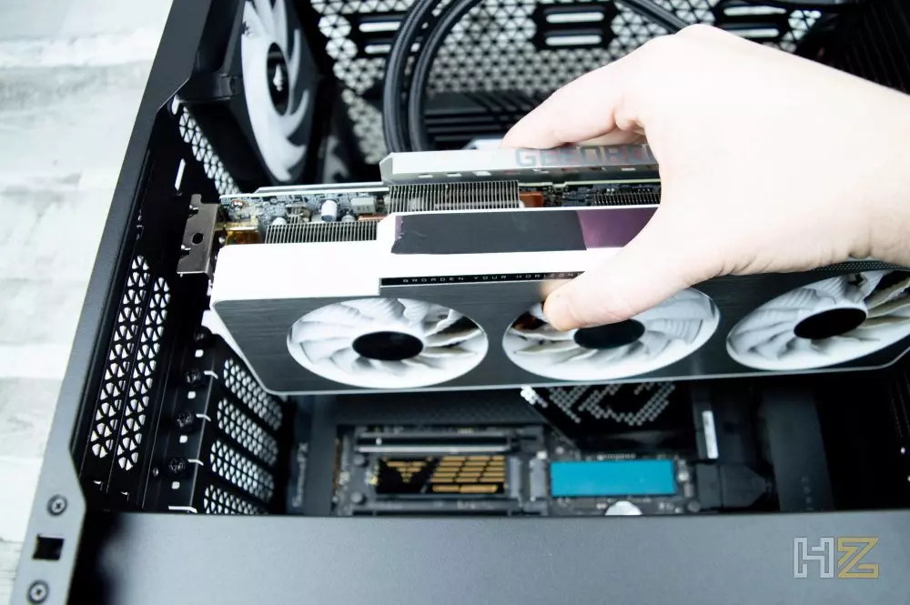

Monta tu propio PC como un profesional siguiendo esta guía
Cómo montar tú mismo un PC por piezas
Como herramientas, necesitarás como mínimo un destornillador Philips «de estrella», y también es recomendable disponer de bridas para ordenar los cables y de un alicate de corte para cortar el sobrante de éstas. Realmente no necesitarás nada más salvo que alguno de los componentes que hayas elegido para tu nuevo PC tenga un sistema de montaje especial, en cuyo caso es habitual que se incluya la herramienta necesaria para ello.
Primeros pasos: prepara todos los componentes
Lo primero que te recomendamos hacer es sacar todo el hardware de sus embalajes, de manera que lo tengas preparado de antemano y así evites tener que parar para sacar un componente de su caja antes de instalarlo. De esta manera, dedicarás unos 10 minutos a prepararlo todo pero luego evitarás tener que hacer parones cuando estés ya trabajando en el montaje.

El primer componente con el que deberás comenzar a trabajar es la caja del PC:>
- Retira ambas tapas laterales.
- Localiza la tornillería (generalmente viene en una caja de cartón metida en el rack de discos duros).
- Prepara los tornillos de latón en los que se instalará la placa base con su formato específico, ya que no todas las cajas los traen instalados por defecto y una placa mATX no usa los mismos que una ATX, por ejemplo.
- Instala de antemano todos los ventiladores adicionales si es que los tienes.
- Prepara el cableado frontal de la caja y canalízalo por los agujeros correspondientes.
También puedes hacer otra cosa más de antemano: instalar el escudo I/O de la placa base. Este viene incluido entre los accesorios de la placa base y deberás instalarlo desde dentro de la caja, a presión (es muy sencillo, tampoco te pases de presión, mete un lado y luego el otro y entrará fácilmente). El hueco de la caja donde instalarlo es rectangular (con la forma del escudo) y está generalmente ubicado bajo el ventilador trasero.
Comienza trabajando con la placa base antes de montarla
Cuando te dispones a montar un PC por piezas es fundamental hacerlo en un orden concreto, ya que si por ejemplo instalaras la tarjeta gráfica antes que el disipador del procesador, ésta te estorbaría a la hora de anclarlo. Así, después de haber dejado preparada la caja lo ideal es que comiences a trabajar con la placa base, ya que hay algunas cosas que puedes hacer en ella antes de montarla que luego te facilitarán el trabajo posterior. Sácala de su caja y de su plástico antiestático; la puedes apoyar sobre su propia caja y plástico sin problemas, pero ten cuidado de no golpearla ni hacer demasiada presión sobre ella. Lo primero que deberías hacer es instalar el procesador de antemano; si usas un socket Intel, levanta la tapa del socket y retira el plástico protector, luego fíjate en qué esquina del procesador hay una marca y haz que coincida con la del socket. Coloca con cuidado el procesador encima del socket y cierra la tapa. Para procesadores AMD, levanta la varilla, pon el procesador en su sitio fijándote que todos los pines entran sin dificultad y luego cierra de nuevo la varilla. Si es un procesador AMD moderno, el sistema de instalación es similar al de Intel, ya que los nuevos sockets AM5 son LGA.
Antes de instalar la placa base en la caja todavía hay unas cuantas cosas que puedes hacer, como por ejemplo si tienes un SSD en formato M.2, es recomendable instalarlo ahora ya que te será más cómodo. Lo mismo sucede si tienes un disipador por aire, lo ideal es instalarlo antes de montar la placa base ya que te será mucho más cómodo, así como la memoria RAM que es simplemente «pinchar» cada módulo en su zócalo.
Evidentemente todo esto puedes hacerlo con la placa base ya instalada en la caja, pero hacerlo con la placa fuera resulta mucho más cómodo y conveniente para ahorrarte tiempo, ya que si la placa está montada en la caja te costará más hacer todo esto. No es que sea un problema, pero así economizas el tiempo que tardas y reduces la dificultad, y con ello la posibilidad de cometer errores.
Procede a montar todas las piezas del PC
En este momento ya puedes comenzar a montar todo el hardware, y lo ideal es comenzar con la placa base. Es importante que el escudo I/O esté ya instalado y que hayas preparado previamente los soportes de latón para anclar la placa. Hecho esto, coge la placa por el lateral derecho (el contrario a los puertos) e introdúcela en diagonal con cuidado haciendo coincidir estos puertos con el escudo I/O. Deposítala con cuidado y los agujeros de la placa deberían coincidir con los soportes de latón; si todo va como debe, atornilla la placa base en su sitio.
Ahora, antes de seguir instalando otros componentes de hardware es el momento de realizar la mayoría de las conexiones, y es el mejor momento porque no tendrás otros componentes estorbando y te resultará más sencillo canalizar y fijar los cables. Comienza canalizando los puertos frontales de la caja (puertos USB, conexiones del panel frontal (encendido, LED de estado y reset) y el HD Audio) para que salgan por el agujero más cercano a su puerto de conexión, y conéctalos. Para todas las conexiones, tenemos un completo tutorial que te enseñará dónde van todos los cables de la placa base que te recomendamos consultar si tienes dudas.
Con todo conectado, si no lo hiciste previamente o si tu disipador es una refrigeración líquida es el momento de montarlo, ya que son componentes bastante voluminosos y es mejor hacerlo cuando no hay demasiadas cosas por medio todavía. El siguiente paso es montar la fuente de alimentación; si no es modular lo ideal es montar primero la propia fuente y luego ir conectando y canalizando cada cable por separado, pero si es modular, te recomendamos hacerlo al revés: primero conecta los cables a la placa base y deja preparados los de los demás componentes en el caso de ser necesario, y monta la fuente de alimentación después. Te recomendamos esto porque muchas veces, cuando vas a montar un PC por piezas, no tienes claro cuántos cables de alimentación vas a necesitar.
Te recomendamos que el primer cable que conectes sea el ATX de 20+4 pines ya que es el más voluminoso y complicado de canalizar, y de hecho te recomendamos que conectes el extremo de la placa base y canalices y fijes el cable con bridas a la caja de manera individual, ya que de lo contrario y especialmente si tu caja no tiene mucho espacio por detrás, podría darte problemas para cerrar la tapa lateral debido a su grosor. Tras este, lo ideal es conectar el EPS de 4+4 pines, y te recomendamos canalizarlo completamente por detrás de la placa base, en vertical, ya que el conector de la placa suele estar en la esquina superior izquierda, casi pegado al escudo I/O.
Si tienes dispositivos de almacenamiento que no sean M.2 (ya que van directamente a la placa y no necesitan cableado), deja preparados los cables de alimentación y los SATA, conectándolos ya a la fuente y placa base respectivamente y canalizándolos para que lleguen al punto de montaje del dispositivo. Una vez hecho puedes proceder a montar los discos duros que vayas a utilizar. En este punto, debemos recordarte que no debes olvidarte de conectar los ventiladores de la caja. Normalmente podrás conectar todos ellos a la propia placa base, aunque si tu caja es de las que incluye un hub de conexión para ventiladores deberás conectarlos a éste para mayor comodidad. Llegados a este punto prácticamente has terminado, ya que solo queda instalar la tarjeta gráfica. Retira los embellecedores de la caja que coincidan con el zócalo PCI-Express que vas a utilizar y simplemente «pínchala» en el zócalo, para después atornillarla a la caja. Hecho esto, solo te queda conectarle los cables PCIe de alimentación que necesite y ya habrás terminado.
